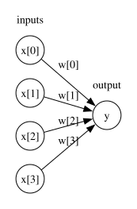
Introduction to Deep Learning
🎯 Learning Outcomes
By the end of this module, you will be able to:
- Explain the basics of neural networks and how they build upon linear models.
- Describe the role of neural networks in machine learning, including their strengths and limitations.
- Outline the key steps involved in training a neural network.
- Identify commonly used neural network architectures (CNNs, RNNs, Transformers) and their typical applications.
Remember this picture we saw earlier?
- Deep Learning (DL) is a subset of machine learning

Image classification
Have you used search in Google Photos? You can search for “my photos of cat” and it will retrieve photos from your libraries containing cats. This can be done using image classification, which is treated as a supervised learning problem, where we define a set of target classes (objects to identify in images), and train a model to recognize them using labeled example photos.
Image classification
Image classification is not an easy problem because of the variations in the location of the object, lighting, background, camera angle, camera focus etc.
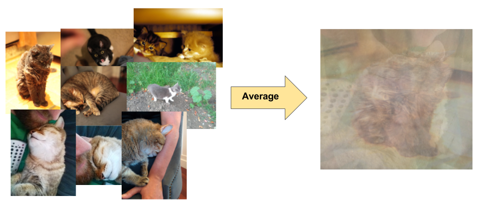
Neural networks
- Neural networks are perfect for these types of problems where local structures are important.
- A significant advancement in image classification was the application of convolutional neural networks (ConvNets or CNNs) to this problem.
- ImageNet Classification with Deep Convolutional Neural Networks
- Achieved a winning test error rate of 15.3%, compared to 26.2% achieved by the second-best entry in the ILSVRC-2012 competition.
- Let’s go over the basics of a neural network.
A graphical view of a linear model
- Remember this graphical view of linear models?
- We have 4 features: x[0], x[1], x[2], x[3]
- The output is calculated as y = x[0]w[0] + x[1]w[1] + x[2]w[2] + x[3]w[3]
- For simplicity, we are ignoring the bias term.
Introduction to neural networks
- Neural networks can be viewed a generalization of linear models where we apply a series of transformations.
- Below we are adding one “layer” of transformations in between features and the target.
- We are repeating the the process of computing the weighted sum multiple times.
- The hidden units (e.g., h[1], h[2], …) represent the intermediate processing steps.
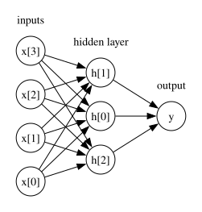
One more layer of transformations
- Now we are adding one more layer of transformations.
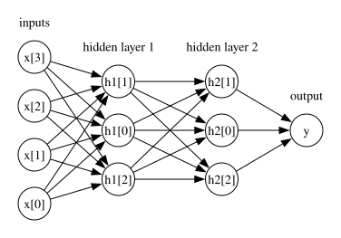
Neural networks
- With a neural net, you specify the number of features after each transformation.
- In the above, it goes from 4 to 3 to 3 to 1.
- To make them really powerful compared to the linear models, we apply a non-linear function to the weighted sum for each hidden node.
- Neural network = neural net
- Deep learning ~ using neural networks
Neural networks example and terminology
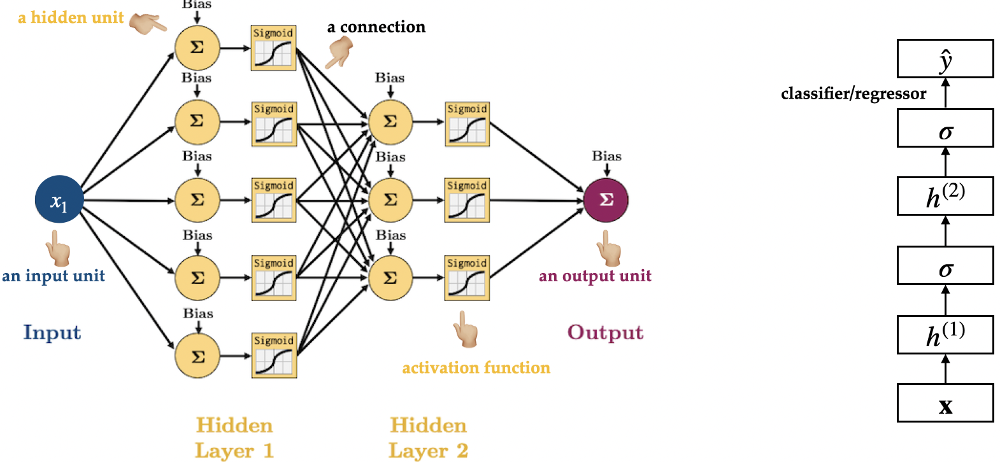
How does training work in neural networks? (High-Level)
Training a neural network has two main steps:
Forward pass:
Feed the input through the network to calculate the predicted output using the current parameter values (weights).Backward pass:
- Measure how far the predicted output is from the actual target (this is the loss).
- Calculate how to adjust each parameter to improve future predictions (gradients).
- Update the parameters using these gradients — this helps the model improve.
Summary
- Input → Forward Pass → Loss → Backward Pass → Parameter Update → Repeat
- The model repeats this process many times, gradually improving its predictions.
Forward pass: Calculate the output
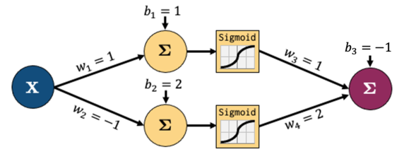
In the forward pass:
- Multiply the inputs by the weights
- Pass through activation functions (non-linearities)
- Calculate the predicted output
Forward pass: Continue through the layers
- The calculations continue through each layer of the network.
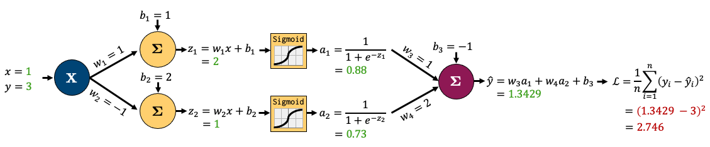
Backward pass: Adjust the parameters (high-level)
Step 1: Compare the predicted output to the actual target using a loss function (how wrong was the prediction?).
Step 2: Calculate how much each parameter contributed to the error (this is the gradient — it tells us which direction to adjust).
Step 3: Update the parameters slightly in the direction that reduces the loss (this is called gradient descent).
Backward pass
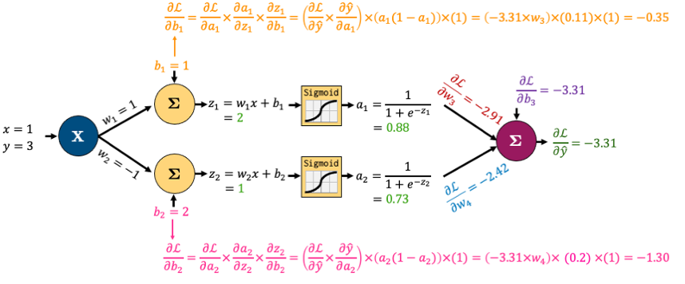
👉 Good news: We don’t have to compute these gradients by hand — modern ML libraries like PyTorch and TensorFlow handle this for us automatically using backpropagation.
Why neural networks?
- They can learn very complex functions.
- The fundamental tradeoff is primarily controlled by the number of layers and layer sizes.
- More layers / bigger layers –> more complex model.
- You can generally get a model that will not underfit.
- They work really well for structured data:
- 1D sequence, e.g. timeseries, language
- 2D image
- 3D image or video
- They’ve had some incredible successes in the last 12 years.
- Transfer learning (coming later today) is really useful.
Why not neural networks?
- Often they require a lot of data.
- They require a lot of compute time, and, to be faster, specialized hardware called GPUs.
- They have huge numbers of hyperparameters
- Think of each layer having hyperparameters, plus some overall hyperparameters.
- Being slow compounds this problem.
- They are not interpretable.
- I don’t recommend training them on your own without further training
- Good news
- You don’t have to train your models from scratch in order to use them.
- I’ll show you some ways to use neural networks without training them yourselves.
Deep learning software
The current big players are:
Both are heavily used in industry. If interested, see comparison of deep learning software.
Commonly Used Neural Network Architectures
Neural networks come in different shapes depending on the type of data and the task.
Convolutional Neural Networks (CNNs)
- Commonly used in image classification, object detection, and medical imaging.
- What’s the problem if we use the above feedforward architecture to learn patterns from images?
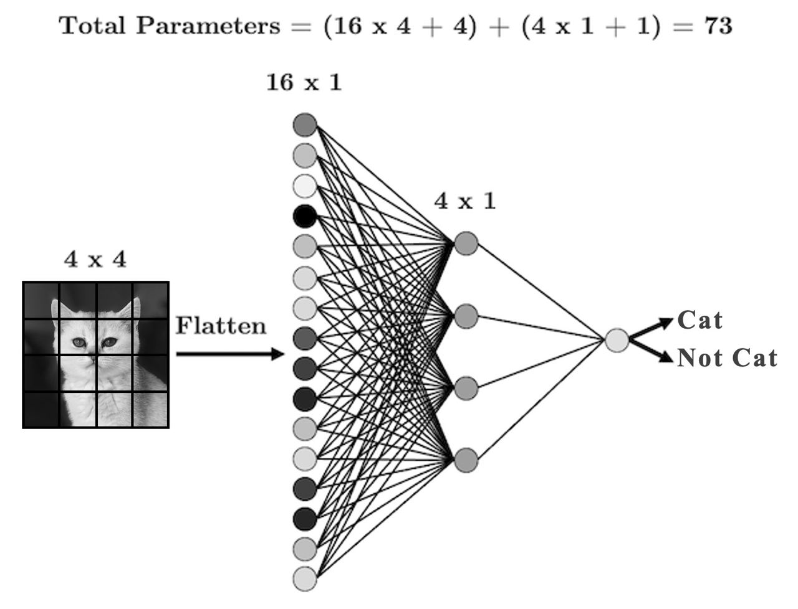
Filters
- Uses filters that “slide” over the input to detect local patterns.
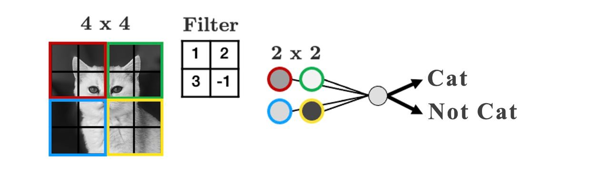
- Play around with filters: https://setosa.io/ev/image-kernels/
CNNs
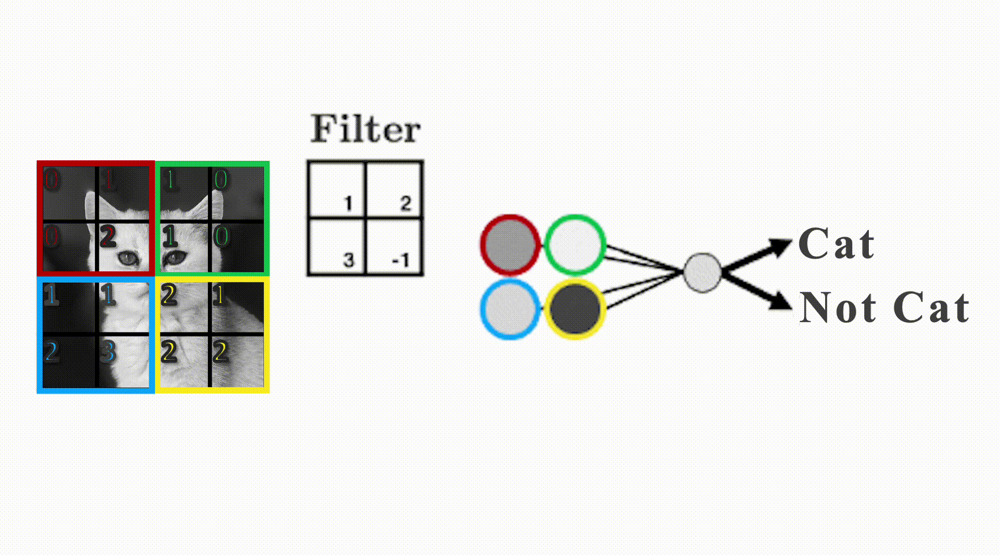
CNNs big picture
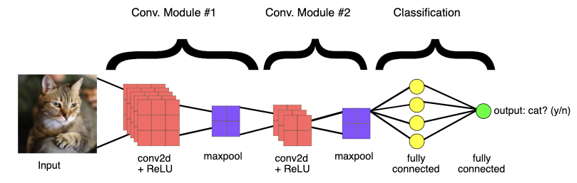
Combining CNN and NN
- Sometimes you’ll want to combine different types of data in a single network
- The most common case is combining tabular data with image data, for example, using both real estate data and images of a house to predict its sale price:
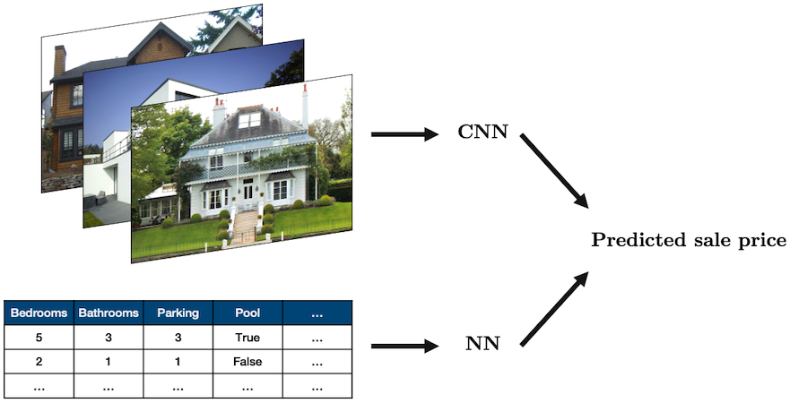
Source: “House” by oatsy40, “House in Vancouver” by pnwra, “House” by noona11 all licensed under CC BY 2.0.
Recurrent Neural Networks (RNNs)
- Designed for sequential data like time series, text, or biological sequences.
- Passes hidden states through time steps to “remember” past information.
👉 Commonly used in language modeling, speech recognition, and system control.
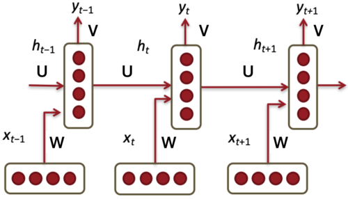
RNN activity
RNN is like your brain reading a sentence word by word.
- Input at each time step: The current word you read
- Hidden state: Your current mental understanding
- Output: Your interpretation, reaction, or prediction at that point in time
Two rows of students:
- Front row = input layer (observations at each time step)
- Back row = hidden state at each time step
- Each column is a time step (0 through 4)
- So we’ll have 4 front-row students: x0 to x3
- And 4 back-row students: h0 to h3
RNN activity
- At time step 0:
- Front-row student x0 gets a word
- They pass it to the back-row student behind them (h0).
- At time step 1 (and beyond):
- The front-row student (e.g., x1) gets a new word
- The back-row student (e.g., h1) receives:
- The current input from the front-row student (e.g., x1)
- Whatever “memory” is passed from the previous hidden state (e.g., h0)
- h1 combines this (e.g., by writing a summary phrase or combining keywords).
- Repeat until time step 3 or 4.
- Final time step: h3 summarizes what they remember (e.g., predicts next word, gives the “mood” of the sentence, etc.)
RNN architectures
- A number of architectures are possible with RNNs, which makes them a very rich family of models.
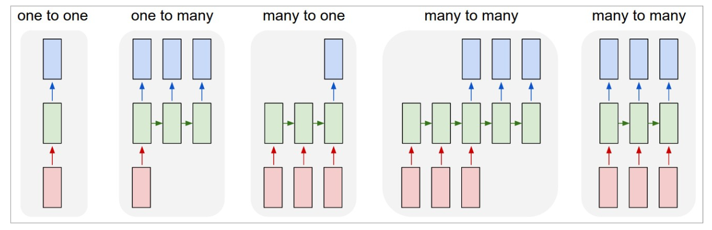
Transformer architectures
What kind of neural network models are behind state-of-the-art Generative AI systems like ChatGPT, Gemini, Bard, DALL-E, GitHub Copilot, and Meta’s Llama?
The answer: Transformer architectures.
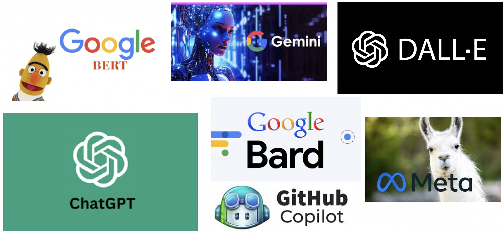
What makes transformer architectures special?
- Transformers were designed for sequences but avoid the limitations of earlier sequence models like RNNs.
- They use attention mechanisms to model relationships between all parts of the sequence at once.
- They scale well to very large datasets and can handle long-term dependencies effectively.
👉 Transformers power large language models (LLMs), image captioning models, and multimodal models like CLIP.
Transformer architecture: Key ideas
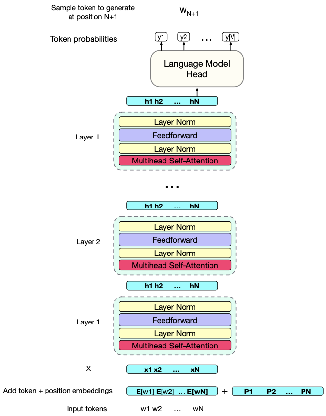
- Input: A sequence of tokens (words, image patches, etc.)
- Output: A sequence of rich, context-aware representations for each token.
- Each layer iteratively refines the token representations.
- These layers learn how each token relates to the others, regardless of their position in the sequence.
Transformer summary
- Designed to handle long sequences efficiently.
- Learn contextual meaning by comparing all tokens to each other (via attention).
- Now the backbone of almost all modern Generative AI models.
- Examples: BERT, GPT-3, GPT-4, Gemini, DALL-E, GitHub Copilot, Meta’s Llama.
Summary
- Neural networks are a flexible class of models.
- They are particular powerful for structured input like images, videos, audio, text etc.
- They can be challenging to train and often require significant computational resources.
- The good news is we can use pre-trained neural networks.
- This saves us a huge amount of time/cost/effort/resources.
- We can use these pre-trained networks directly or use them as feature transformers.